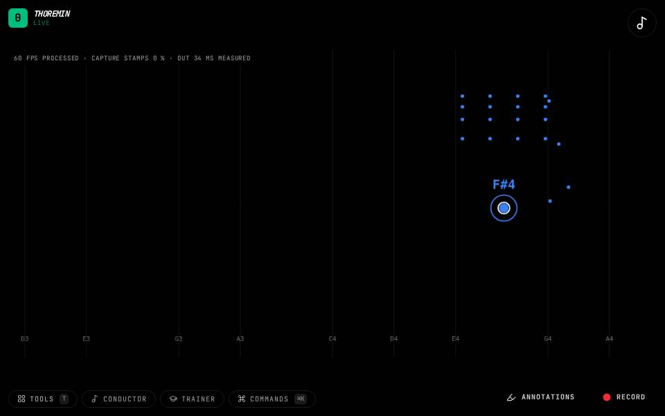

Instruments › Field instruments
Open Air Pad

What to do
- Move a hand to play notes on a soft pad.
- Open your hand wide to make the sound brighter.
- Close it to make it duller.
A glassy pad where the shape of your hand is the tone: open is bright, closed is dark.
How it works
Notes come from the wrist. How open the hand is controls the brightness (a filter on the sound), so you can shape each note while you hold it.
Its settings: Sound, Hand. Every knob: the manual.